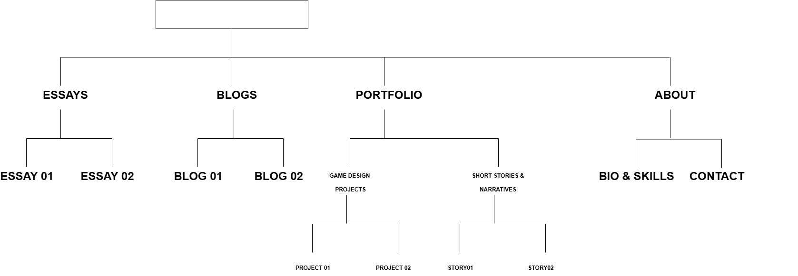

Website Design Process & Reflection: IxD Process
1. User Needs:
The goal for this website really is to showcase my game dev projects; presents my Essays, Blogs, and Creative Writing. It is also to provide insight into the design process that went and establish my professional identity. Essentially; it the goal is to make it my portfolio.
Currently my website has:
- A functioning nav bar with links that take the user/visitor to the respective pages.
- Proper HTML structure for most sections.
- It also has basic content organization with no styling or interactivity.
Below is a picture of User Flow and my User/folder structure:
2. HTML Structure:
My primary goal has been:
- to provide clear and semantic markup using <header>, <nav>, <article>, etc because we have not touched on styling and javascript yet. We are still doing HTML Fundamentals.
- Putting in place useful navigation links
- Logically organizing content categories.
Current Challenges:
- Wireframes are always changing, which makes it difficult to finish the structure.
- Since I have never used Microformats, I am currently learning how to utilize them properly.
- I am also trying to figure out to use headings <h1> to <h6> properly and efficiently for SEO accessibility.
3. Microformats & Semantic Markup:
I am learning about Microformats to improve meaning for my website and want to use semantic components like <article>, <time> and <address>
I might also look into structuring my portfolio and blogs page using microformats for things like author, publish date and stuff.
4. Reflection & Progress:
I am Proud that the website is somewhat clear and all pages are accessible via the links in the nav bar, HTML navigation is functional and kinda interesting even without styling. The organization of my content is improving and I am starting to get familiar with microformats.
Going forward I want finalize my content structure before looking into refining things.